The Working Cell
Energy, enzymes, and how cells move materials — Chapter 5
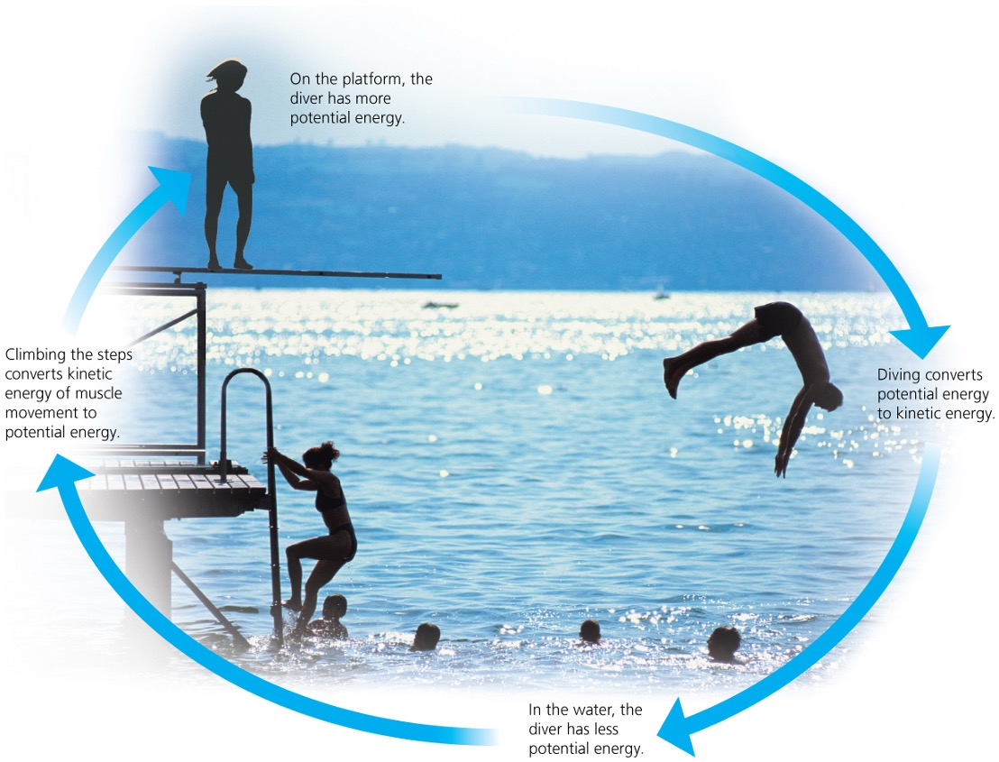
Kinetic, Potential & Conservation of Energy
Energy makes the world go around — and every living cell run. All forms of energy fall into two categories, and understanding them sets the foundation for everything in this chapter.
⚡ Kinetic Energy — the energy of motion
+Anything that is moving has kinetic energy. A falling diver, flowing electrons, and a molecule vibrating in a cell — all have kinetic energy. Heat is a form of kinetic energy: the random motion of atoms and molecules.
🏗️ Potential Energy — stored energy
+Potential energy is energy an object has because of its location or structure. A diver at the top of a board has potential energy due to position. A glucose molecule has potential energy due to its chemical structure — the arrangement of its atoms stores energy that can be released.
♻️ Conservation of Energy — the first law
+Energy cannot be created or destroyed — only converted from one form to another. A diver converts potential energy to kinetic energy on the way down. A cell converts chemical energy in glucose to ATP. In every case, the total amount of energy stays the same; only the form changes.
🌡️ Heat & Entropy — the second law
+Entropy is a measure of disorder in a system. Every time energy is converted from one form to another, some energy is lost as heat and entropy increases. No energy conversion is 100% efficient — cells included. This is why you get warm when you exercise.
When you eat a meal, chemical potential energy in food is converted to kinetic energy (movement), heat (body warmth), and ATP (cellular fuel). All three happen simultaneously.
Chemical Energy & Cellular Respiration
The molecules of food, gasoline, and other fuels have a form of potential energy called chemical energy. Living cells and car engines use the same basic process: break down fuel into smaller waste molecules, releasing energy that can be used to do work.
Cellular respiration is how cells extract energy from food. Glucose (fuel) + oxygen → carbon dioxide + water + energy (stored as ATP). Humans convert about 34% of food energy into useful work. The rest becomes body heat.
Every time energy converts, entropy increases. A cell is never a perfect machine — and that's why you warm up when you work hard.
A calorie (lowercase) is a tiny unit. Food is measured in Calories (capital C) — which are actually kilocalories, equal to 1,000 calories. That 250 Cal granola bar contains 250,000 calories of chemical energy.
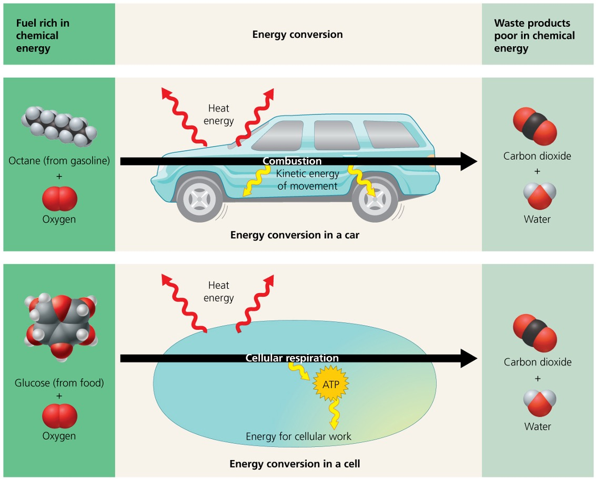
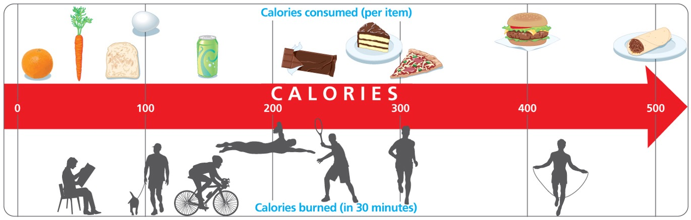
ATP: The Energy Shuttle
Chemical energy released by cellular respiration doesn't go directly into cellular work — it gets stored in molecules of ATP. Think of ATP as a rechargeable battery the cell can spend and refill constantly.
ATP = adenosine + a tail of three phosphate groups. The bond holding the third (tip) phosphate is high-energy. When that bond breaks, ATP becomes ADP + a free phosphate, and energy is released for cellular work.
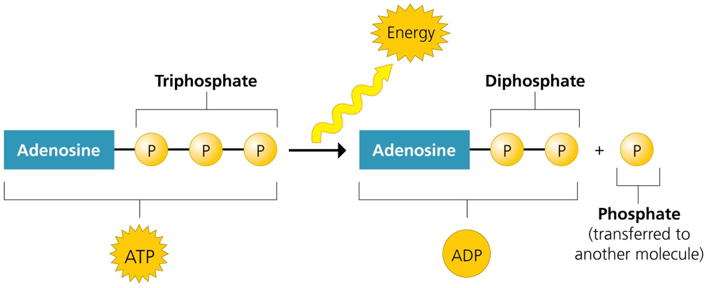
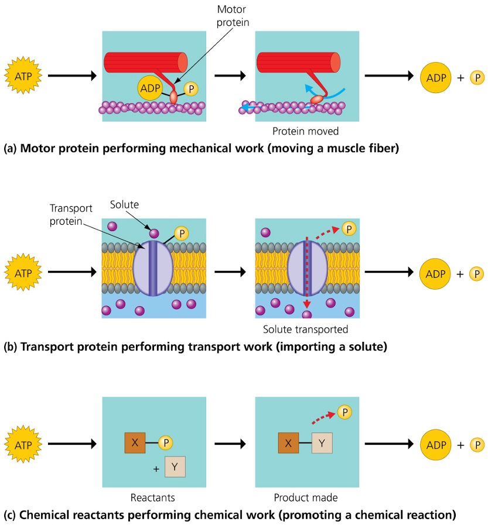
The ATP Cycle
Cells spend ATP continuously — a working muscle cell consumes and recycles up to 10 million ATP molecules per second. ATP is not stockpiled; it is constantly rebuilt from ADP using energy from cellular respiration.
recharges ADP → ATP
ATP → ADP + P
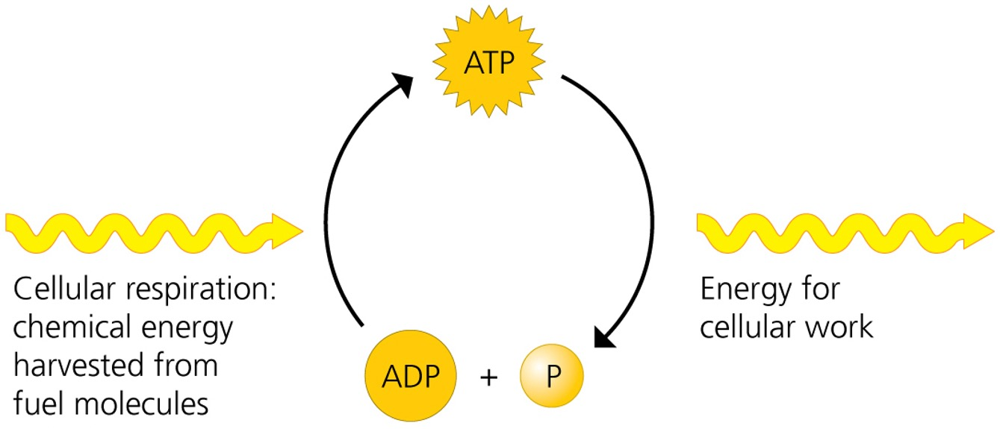
Your body contains about 250g of ATP at any moment — but your cells recycle this supply hundreds of times per day. You produce roughly your body weight in ATP every 24 hours.
Enzymes & Activation Energy
Metabolism is the sum of all chemical reactions in an organism. Most of these reactions do not happen spontaneously at body temperature — they need a push. That push is called activation energy.
Enzymes are proteins that speed up reactions by lowering the activation energy required. They are not consumed in the process — they can catalyze the same reaction over and over. All living cells contain thousands of different enzymes, each promoting a specific chemical reaction.
Without enzymes, the chemical reactions that sustain life would occur far too slowly — or not at all — at normal body temperatures. Enzymes make life's chemistry possible.
🌡️ Why activation energy matters
+Think of activation energy as the energy needed to push a boulder to the top of a hill before it rolls down. Without that initial push, nothing happens. Enzymes lower the hill — the reaction still releases or absorbs the same total energy, but it gets started far more easily.
🏷️ Naming enzymes
+Most enzymes are named after their substrate (the molecule they act on), with an -ase ending. Lactase acts on lactose. Protease acts on proteins. Lipase acts on lipids. This naming convention tells you what an enzyme does immediately.
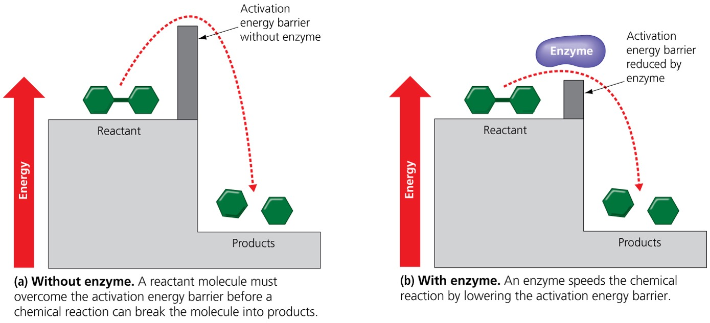
An enzyme is like a matchmaker who brings two people together — it lowers the barrier to connection but isn't changed by the encounter and can do it again for the next pair.
How Enzymes Work: Active Site & Induced Fit
Each enzyme is selective — it recognizes only one specific substrate. The key to specificity is the active site: a region shaped and chemically matched to fit that substrate.
Step 1: Enzyme Ready
The enzyme has an active site with a specific shape and chemistry that matches its substrate. The active site is open and waiting. At this stage, no reaction has occurred.
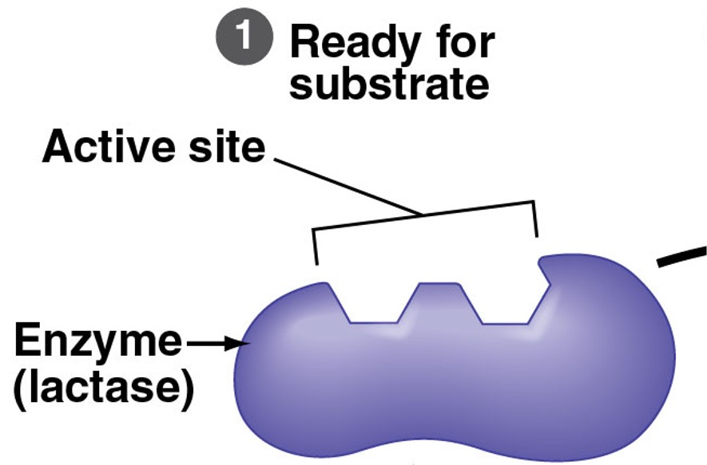
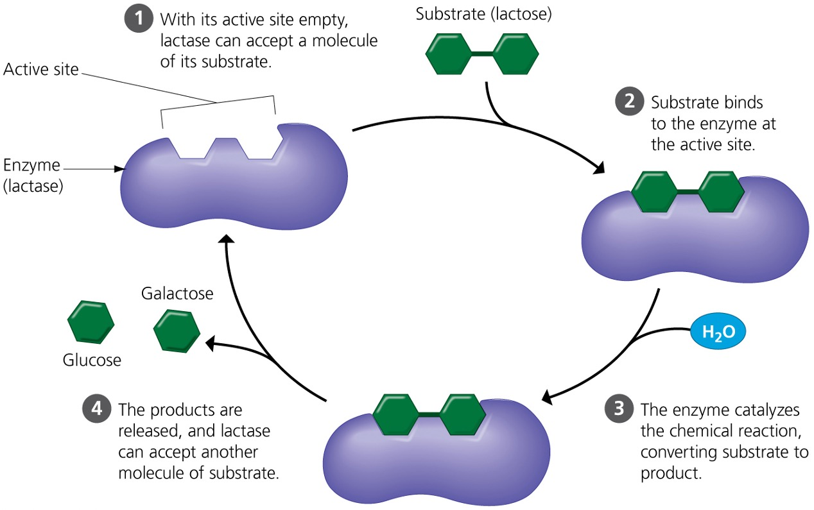
Enzyme Inhibitors
Certain molecules can disrupt enzyme function by binding to the enzyme and changing its shape so the active site no longer accepts the substrate. These are called inhibitors.
Example: Penicillin blocks the active site of an enzyme bacteria use to build cell walls — killing the bacteria without harming human cells.
Example: When a cell produces enough of a product, that product inhibits an enzyme earlier in its own production pathway — keeping the cell from wasting resources.
Ibuprofen inhibits an enzyme involved in pain signals. Many cancer drugs inhibit enzymes that promote cell division. Many toxins — including nerve agents — are enzyme inhibitors. Understanding this mechanism explains how both drugs and poisons work.
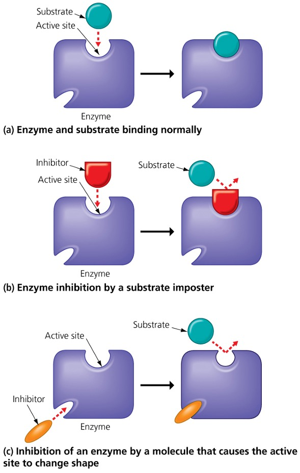
Membrane Structure & Protein Functions
Cells must regulate the flow of materials between their internal environment and the outside world. The plasma membrane is the gatekeeper: a double layer of fat (a phospholipid bilayer) with proteins embedded throughout.
These membrane proteins carry out specific functions — click each to learn more.
🚪 Transport
+Transport proteins act as corridors or pumps for specific molecules that cannot cross the lipid bilayer on their own — ions, glucose, water. Some work passively (no energy); others pump molecules actively (requires ATP). This is the most critical function for regulating the cell's internal chemistry.
📡 Cell Signaling
+Signal receptor proteins detect chemical signals from outside the cell (hormones, neurotransmitters) and relay the message to the cell's interior, triggering a response. Insulin receptors on liver cells work this way.
🧬 Enzymatic Activity
+Some membrane proteins are enzymes that catalyze reactions directly at the membrane surface — a useful arrangement for coordinating sequential reactions.
🤝 Cell-to-Cell Recognition
+Glycoproteins on the cell surface act as identity tags — allowing cells to recognize each other. This is critical for immune responses (distinguishing self from foreign) and embryonic development.
🔗 Intercellular Joining
+Some proteins lock adjacent cells together into tissues, providing structural integrity. Others form channels between cells that allow direct chemical communication.

Many drugs work by targeting membrane proteins directly. Beta-blockers bind to signaling receptors to slow heart rate. HIV hijacks cell-recognition proteins (CD4) to get inside immune cells. Cystic fibrosis is caused by a single defective transport protein — CFTR — that can no longer move chloride ions across the membrane.
Diffusion & Passive Transport
Molecules constantly move. Diffusion is the net movement of molecules from an area of higher concentration to an area of lower concentration. No energy is required — molecules naturally move down their concentration gradient.
🔵🔵🔵🔵🔵
🔵
Passive transport is diffusion across a membrane. Because it follows the concentration gradient, the cell expends no energy. Facilitated diffusion is a type of passive transport that uses protein channels — still no energy required, still down the gradient.
🔬 Simple vs. Facilitated Diffusion
+Simple diffusion: Small, nonpolar molecules (O₂, CO₂) pass directly through the phospholipid bilayer without any protein help.
Facilitated diffusion: Large or charged molecules (glucose, ions) cannot cross the lipid bilayer directly. They move through specific transport proteins that act as corridors — still passively, still down the gradient, still no ATP.
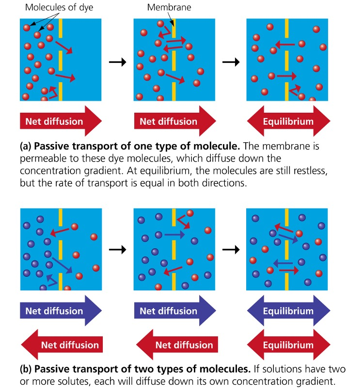
Passive transport = no ATP required. The concentration gradient itself is the driving force. Once equilibrium is reached — equal concentration on both sides — net movement stops.
Osmosis & Water Balance
Osmosis is simply the diffusion of water across a membrane. The same rule applies: water moves from where it is more concentrated (fewer solutes) to where it is less concentrated (more solutes) — until equilibrium is reached.
Water molecules are in constant random motion. A region with more dissolved solutes has fewer free water molecules — so fewer collide with and cross the membrane. The net flow of water is always toward higher solute concentration.
🧂 Solute, Solvent, Solution — defined
+A solute is the substance dissolved (e.g., salt, sugar). A solvent is the liquid doing the dissolving (water in biology). The solution is the mixture. In osmosis, water (the solvent) moves across the membrane — solutes typically cannot follow.
🌡️ Selectively permeable membrane
+The plasma membrane allows water to pass through freely (via protein channels called aquaporins) but restricts the movement of most solutes. This selective permeability is what makes osmosis possible — if solutes could cross freely, there would be no osmotic pressure.
⚖️ Osmoregulation
+Animals need to balance water uptake and loss constantly — this is called osmoregulation. Saltwater fish, freshwater fish, and terrestrial animals face completely different osmotic challenges and have evolved different osmoregulatory strategies.
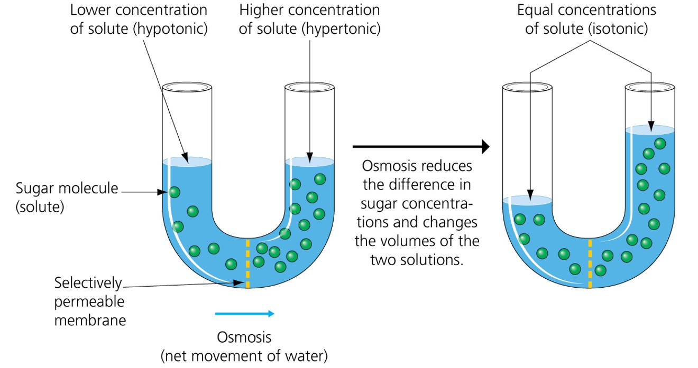
Water always moves toward the crowd. The side with more solute has fewer "free" water molecules — so water flows across the membrane to balance things out, not because it's being pushed, but because that's where it's needed most.
Tonicity: What Happens to Cells in Solution
Tonicity describes how a solution affects a cell's water balance. Three terms describe the three possibilities: isotonic, hypotonic, and hypertonic.
IV fluids given in hospitals are carefully formulated to be isotonic with blood — so red blood cells neither burst nor shrivel. An accidental hypertonic or hypotonic IV can be fatal.
A wilting plant needs water because its cells have lost turgor pressure — they're in a relatively hypertonic environment. Watering restores the hypotonic conditions that make plant cells turgid and stems upright.
Active Transport
Passive transport moves molecules down their concentration gradient — no energy needed. Active transport does the opposite: it moves molecules against the gradient, from low concentration to high concentration. That's uphill work, and it requires energy — specifically ATP.
Passive vs. Active Transport
| Feature | Passive | Active |
|---|---|---|
| Direction | High → Low (down gradient) | Low → High (against gradient) |
| ATP Required? | No | Yes |
| Protein needed? | Sometimes (facilitated) | Always (transport protein/pump) |
| Example | O₂ into cells, glucose | Na⁺/K⁺ pump in nerve cells |
Active transport allows cells to maintain internal concentrations that differ dramatically from their surroundings — critical for nerve impulses, muscle contraction, and regulating cell volume. Your nerve cells couldn't fire without the sodium-potassium pump running constantly on ATP.
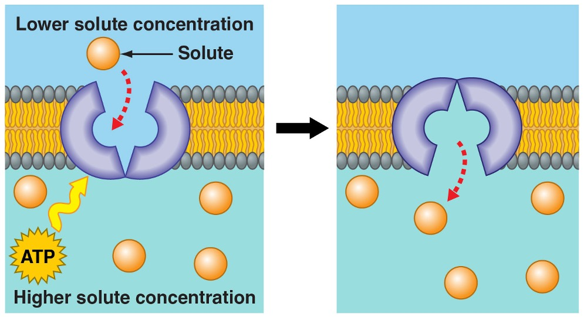
Your kidneys use active transport to reclaim glucose from urine back into the blood. Some diabetes drugs work by blocking this process, causing excess glucose to be lost in urine.
Bulk Transport & the Origin of Membranes
Individual molecules cross membranes through channels and pumps. Large molecules — proteins, polysaccharides, even whole pathogens — require a different mechanism: bulk transport using membranous vesicles.
📤 Exocytosis — moving OUT
+In exocytosis, the cell packages materials into vesicles (membrane-enclosed sacs) that fuse with the plasma membrane, expelling their contents outside. This is how cells secrete hormones, neurotransmitters, and digestive enzymes.
📥 Endocytosis — moving IN
+In endocytosis, the plasma membrane engulfs material by budding inward, forming a vesicle inside the cell. White blood cells use a form called phagocytosis to engulf and destroy bacteria. Cells also take in specific molecules via receptor-mediated endocytosis.
Phospholipids — the key ingredient of membranes — were likely among the first organic compounds to form on early Earth. In water, phospholipids spontaneously self-assemble into simple membranes. This tendency is why life could begin: a membrane-enclosed collection of molecules is the first step toward a cell. Every cell on Earth today is enclosed by a plasma membrane that is similar in structure and function — illustrating the evolutionary unity of life.
Biomedical engineers produce liposomes — artificial membrane vesicles — that can carry drugs or nutrients to specific sites in the body. mRNA COVID vaccines were delivered inside lipid nanoparticles using exactly this principle.
Chapter 5 in One Diagram
- Cells run on ATP — built by cellular respiration
- Enzymes make reactions fast enough to sustain life
- Passive transport moves molecules down gradients, no ATP
- Osmosis is passive transport of water
- Tonicity determines water gain or loss in cells
- Active transport moves molecules against gradients, needs ATP
- Vesicles handle bulk movement in and out
Recall the major theme: Structure/Function. Every membrane protein, every enzyme active site, and every transport mechanism in this chapter is another example of structure determining function.
The Working Cell: Pulling It Together
⚡ Energy & ATP
- Kinetic, potential, chemical energy — all interconvertible
- ATP is the cell's universal energy currency
- ATP → ADP + P releases energy for three types of cellular work
- Cellular respiration constantly recharges ADP back to ATP
⚗️ Enzymes
- Lower activation energy without being consumed
- Active site + substrate → induced fit → products released
- Inhibitors (competitive or allosteric) block enzyme function
- Many drugs and toxins work by inhibiting enzymes
↔️ Passive Transport & Osmosis
- Diffusion moves molecules from high → low concentration
- No ATP required — concentration gradient drives the movement
- Osmosis = diffusion of water across a membrane
- Tonicity: iso / hypo / hypertonic determine water gain or loss
⬆️ Active Transport & Bulk Movement
- Active transport moves molecules against gradient — needs ATP
- Allows cells to maintain internal chemistry different from surroundings
- Exocytosis (out) and endocytosis (in) handle large molecules
- Membranes are ancient — phospholipids self-assemble spontaneously
Every concept in this chapter connects back to one idea: cells must do work to stay alive. Energy is required, enzymes make chemistry fast enough, and membranes regulate what enters and exits. Remove any one of these and the cell fails.
Review the three self-checks embedded in slides 5, 8, and 12 — or use the dot navigation below to revisit any section.